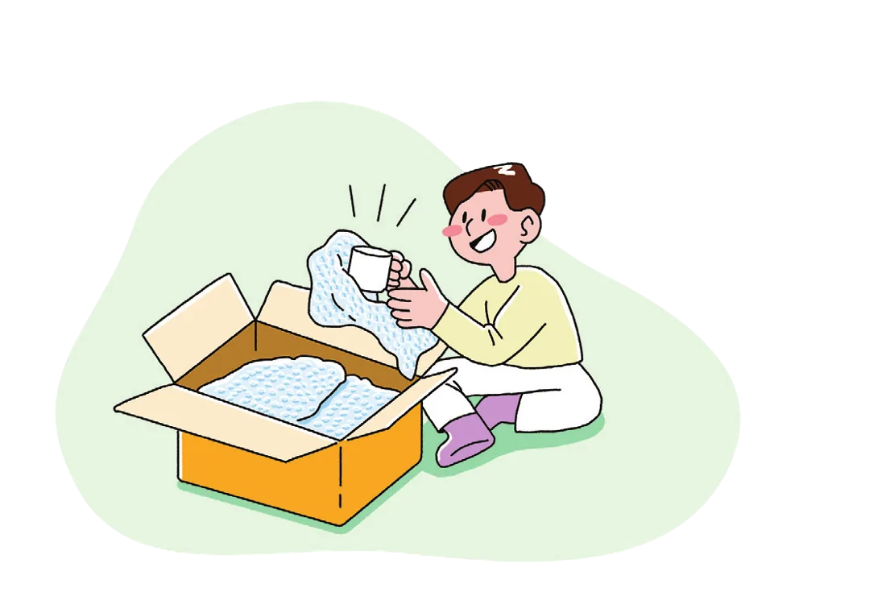
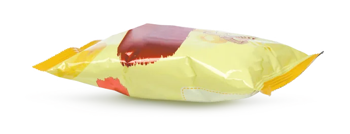
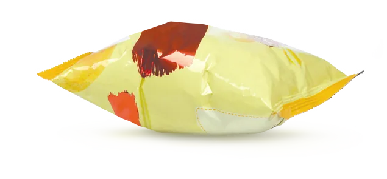
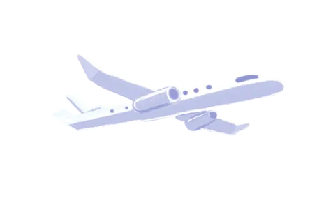
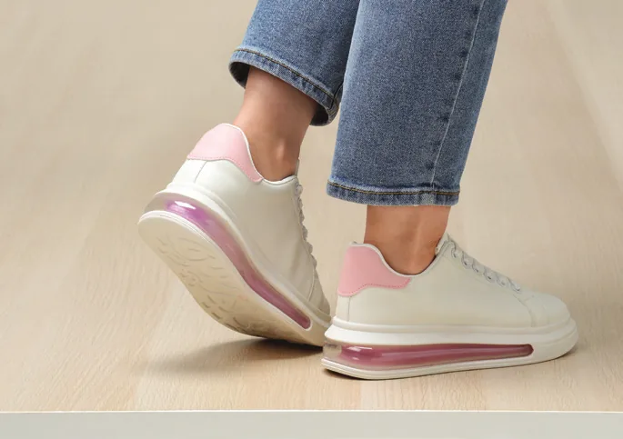
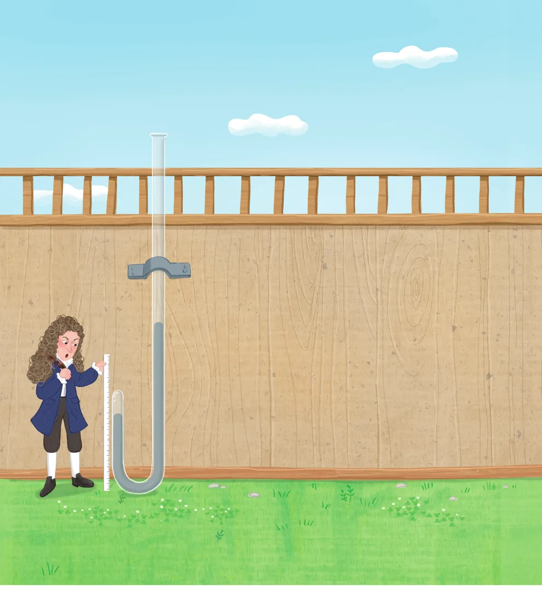
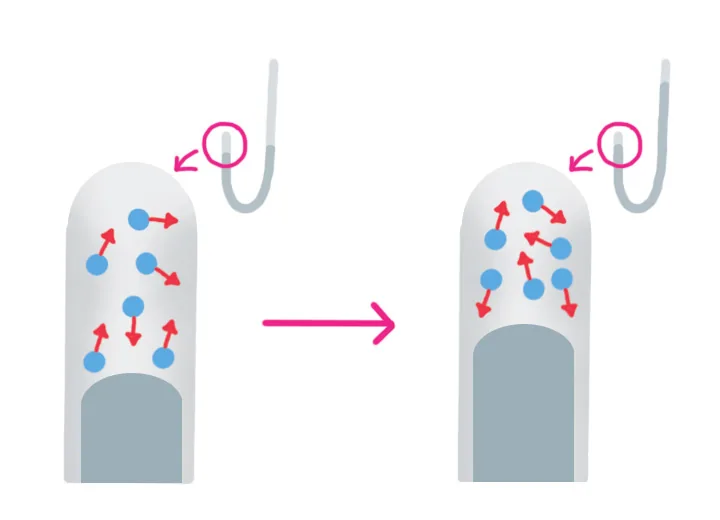
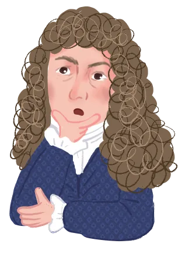

들어가기교과서 204쪽
이전 단원 확인하기문장을 완성해 보자
일정한 온도에서 일정량의 기체에 작용하는 압력이 커질 때 기체의 부피는 줄어들고, 기체 입자의 충돌 횟수는 많아진다.
이 단원을 배우면
생각 깨우기뽁뽁이로 포장한 유리컵

유리컵을 뽁뽁이로 포장하면 잘 깨지지 않는 까닭은 무엇일까?
외부에서 물건에 충격이 가해지면 뽁뽁이 속 기체의 부피가 줄어들면서 기체의 압력이 커져서 충격을 줄여 주기 때문이다.
생활 속 기체의 압력과 부피 관계교과서 204쪽
기체의 압력과 부피 관계를 확인할 수 있는 현상
물건을 포장할 때 사용하는 뽁뽁이는 외부에서 압력이 가해질 때 뽁뽁이 속 기체의 압력이 커지고 부피가 줄어들면서 물건이 파손되지 않게 해 준다. 이처럼 생활 속에서 기체에 작용하는 압력에 따라 기체의 압력과 부피가 달라지는 현상을 경험할 수 있다.
지구를 둘러싸고 있는 공기가 작용하는 압력
① 하늘을 나는 비행기 안 과자 봉지

→
질소 기체가 든 과자 봉지를 높은 곳으로 가지고 가면 과자 봉지가 부풀어 오른다.
높은 곳으로 가면 대기압이 작아져 과자 봉지 속 기체에 작용하는 압력이 작아지므로 과자 봉지 속 기체의 부피가 늘어난다.
② 공기 침대
공기 침대에 누우면 공기 침대가 찌그러진다.
공기 침대에 가해지는 압력이 커져 공기 침대 속 기체의 부피가 줄어든다.
그림 Ⅵ-5 기체의 압력과 부피 관계를 확인할 수 있는 현상
관찰하기올라가면? 내려가면?
막대를 움직여 높이와 깊이에 따라 기체의 부피가 어떻게 달라지는지 확인해 보자. (온도는 일정하다고 가정)

압력 단위: 기압 · 물속에서는 약 10 m 내려갈 때마다 압력이 약 1기압씩 커진다.
더 알아보기비행기가 이륙할 때 귀가 먹먹해지는 까닭
비행기가 이륙하면 고도가 빠르게 높아지면서 대기압은 급격히 낮아지지만, 고막 안쪽 공기의 압력은 바로 변하지 않는다.
고막 안쪽 공기의 부피가 늘어나 고막을 밖으로 밀어내므로 귀가 먹먹해진다. 침을 삼키거나 하품을 하면 유스타키오관이 열리면서 고막 안쪽 공기가 빠져나가 압력 차가 해소되므로 먹먹한 느낌이 없어진다.
생활 속에서 보일 법칙과 관련된 현상 찾아보기교과서 205쪽 · 생활 속에서 기체의 압력과 부피 관계를 이용한 예를 더 찾아 발표해 보자.
해 보기모둠 조사·발표
준비물 | 스마트 기기
- 모둠별로 생활 속에서 보일 법칙과 관련된 현상을 조사해 보자.
- 조사한 내용을 그림이나 사진, 영상을 첨부하여 정리한 후 발표해 보자.
- 다른 모둠의 발표를 들으며, 궁금한 점을 추가로 질문하거나 조사한 예가 적절한지 이야기해 보자. (다른 모둠이 발표하는 동안 발표 내용을 경청하자.)
예시공기 주머니가 들어 있는 운동화

공기 주머니가 들어 있는 운동화를 신고 뛰어올랐다가 착지하면?
착지할 때 운동화에 작용하는 압력이 커져서 공기 주머니 속 기체의 부피가 줄어든다.
조사 예시이런 현상도 있다
- 1하늘 높이 올라간 풍선
위로 올라갈수록 대기압이 작아지므로 풍선이 하늘 높이 올라갈수록 풍선의 크기가 점점 커지다가 어느 정도 높이까지 올라가면 결국 터진다.
- 2하임리히법
음식물이 기도를 막았을 때 복부 위쪽을 강한 힘으로 압박하면 허파를 둘러싼 공간의 부피가 작아지면서 허파에 작용하는 압력이 커지므로 기도를 막은 음식물이 튀어나온다.
- 3잠수부가 내뿜은 공기 방울
공기 방울이 수면으로 올라갈수록 수압이 작아지므로 공기 방울 속 기체의 부피가 늘어나 크기가 커진다.
확인하고 정리하기교과서 205쪽
스스로 확인하기
- 1질소 기체가 들어 있는 과자 봉지를 높은 산 위로 가지고 가면 과자 봉지 속 기체의 부피가 ( 줄어든다, 늘어난다 ). → 늘어난다
- 2탐구 능력 | 깊은 바닷속에 사는 민어가 수면 위로 올라오면 부레가 크게 부풀어 오른다. 그 까닭을 수압에 따른 기체의 부피 변화와 관련지어 설명해 보자.
깊은 바닷속에 사는 민어가 수면 위로 올라오면 수압이 갑자기 낮아져서 부레 속 기체의 부피가 많이 늘어나기 때문이다.
추가 확인 문제보일 법칙과 관련된 현상이면 O, 아니면 X
①은 증발, ②는 확산과 관련된 현상이다.
배운 내용 정리하기 · 보일 법칙 관련 예
| 기체에 작용하는 압력이 커지면 | 기체에 작용하는 압력이 작아지면 |
|---|---|
| 기체의 부피가 줄어든다 | 기체의 부피가 늘어난다 |
| 공기 침대에 누울 때 공기 주머니가 든 운동화로 착지할 때 뽁뽁이에 충격이 가해질 때 | 질소 기체가 든 과자 봉지를 높은 곳으로 가져갈 때 깊은 바닷속 공기 방울이 올라올 때 민어가 수면 위로 올라올 때 |
과학자 이야기교과서 206쪽 · 기체의 성질을 밝힌 과학자
가상 인터뷰보일과의 가상 인터뷰
기체의 성질을 알아내기 위해 어떤 실험을 했나요?
A먼저 한쪽 끝이 막혀 있는 3 m 길이의 J 자 유리관을 직접 제작했어요. 그런 다음 이 유리관에 수은을 채우고, 유리관 속 공기가 압축되는 것을 관찰했지요. 이 과정에서 유리관이 깨져서 수은이 바닥에 흩어지는 등 여러 가지 어려움을 겪었어요.
Q이 실험으로 어떤 원리를 발견했나요?
A많은 시행착오 끝에, 수은의 양이 많아져 공기에 가해지는 압력이 커지면 막힌 유리관 속 공기의 부피가 줄어드는 것을 확인할 수 있었죠. 이 실험 결과로부터 일정한 온도에서 기체의 부피가 압력에 반비례한다는 법칙을 발견했어요. 이것은 기체 입자 사이에 빈 공간이 존재하여 압력을 받으면 입자 사이의 거리가 가까워지기 때문이랍니다.


가치 태도 활동과학자 보일에 관한 과학 신문 만들기
보일의 과학적 업적을 조사하고, 조사한 내용을 바탕으로 하여 과학 신문을 만들어 보자.
“보일, 기체의 압력과 부피 관계를 밝혀내다”

다음 시간에는
‘1. 기체의 압력과 부피 관계’ 중단원을 정리해 보자. (교과서 206~207쪽)